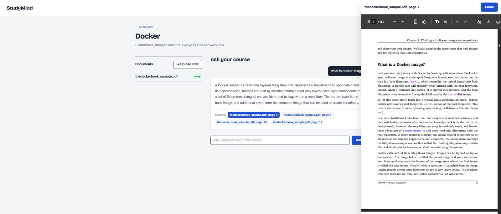

Open to working student roles in Bremen or remote
Offen für Werkstudentenstellen in Bremen oder remote
Full-stack developer who ships tested software.
Full-Stack-Entwickler, der getestete Software ausliefert.
I'm a Computer Science Master's student at Hochschule Bremen. I build web applications end to end, from the database to automated deployment, with Java, Spring Boot, Python, FastAPI, React and Angular, and I integrate AI where it actually helps.
Ich bin Masterstudent der Informatik an der Hochschule Bremen. Ich entwickle Webanwendungen von der Datenbank bis zum automatisierten Deployment, mit Java, Spring Boot, Python, FastAPI, React und Angular, und setze KI dort ein, wo sie wirklich hilft.
ProjectsProjekte
StudyMind Live
AI study assistant · Personal project · 2026
KI-Lernassistent · Eigenes Projekt · 2026

Students upload their lecture PDFs and ask questions. StudyMind answers only from their own documents and cites the pages it used; one click opens the PDF at that page.
Studierende laden ihre Vorlesungs-PDFs hoch und stellen Fragen. StudyMind antwortet nur aus den eigenen Unterlagen und nennt die verwendeten Seiten; ein Klick öffnet das PDF an dieser Seite.
- Retrieval-augmented generation: chunking, Gemini embeddings and vector search in PostgreSQL with pgvector
- Response time of the language model cut from over 40 s (timeouts) to 0.6 s by measuring several models and switching to Groq
- Every merge is tested (110 tests) and deployed automatically to Azure and Vercel with GitHub Actions
- Retrieval-Augmented Generation: Chunking, Gemini-Embeddings und Vektorsuche in PostgreSQL mit pgvector
- Antwortzeit des Sprachmodells von über 40 s (Timeouts) auf 0,6 s gesenkt, durch Messung mehrerer Modelle und Wechsel zu Groq
- Jeder Merge wird getestet (110 Tests) und mit GitHub Actions automatisch auf Azure und Vercel ausgerollt
Living Smarter
LLM voice assistant for smart homes · Research project, Hochschule Bremen · 2025
LLM-Sprachassistent für Smart Homes · Forschungsprojekt, Hochschule Bremen · 2025
The prototype behind a joint research paper: an orchestrator on Google Gemini splits natural commands into tasks and runs them with tools (simulated smart home, web search, YouTube, Gmail, voice).
Der Prototyp zu einer gemeinsamen wissenschaftlichen Arbeit: Ein Orchestrator auf Basis von Google Gemini zerlegt Befehle in Teilaufgaben und führt sie über Tools aus (simuliertes Smart Home, Websuche, YouTube, Gmail, Sprache).
- 100 % intent recognition and 72 % task success in 36 test cases
- Unit tests with a fake LLM found and fixed two bugs in device control
- A reproducible evaluation script reruns the study without side effects
- 100 % Intentionserkennung und 72 % erfolgreiche Aufgaben in 36 Testfällen
- Unit-Tests mit einem Fake-LLM fanden zwei Fehler in der Gerätesteuerung
- Ein reproduzierbares Evaluationsskript wiederholt die Studie ohne Seiteneffekte
CCAI: Cyber Crime based on AI
Multi-agent research demonstrator · Master's team project · 2024–2025
Multi-Agenten-Forschungsdemonstrator · Masterprojekt im Team · 2024–2025
Developed as a team: a demonstrator that shows how LLM agents can generate targeted phishing scenarios from a company name, to raise awareness of the threat. I built the report-writer and database agents, the result dashboards, and the website-cloning integration.
Im Team entwickelt: ein Demonstrator, der zeigt, wie LLM-Agenten aus einem Firmennamen gezielte Phishing-Szenarien erzeugen, um für die Bedrohung zu sensibilisieren. Meine Teile: Report-Writer- und Datenbank-Agent, Ergebnis-Dashboards und die Website-Cloning-Integration.
Nearby Activity Finder
Mobile app · Team project, Hochschule Bremen · 2025
Mobile App · Teamprojekt, Hochschule Bremen · 2025
Developed as a team: a Flutter app that suggests leisure activities by location, weather and group. I built the app interface: home screen with live weather, filters, navigation and the map with clustered markers.
Im Team entwickelt: eine Flutter-App, die Freizeitaktivitäten nach Standort, Wetter und Gruppe vorschlägt. Meine Teile: App-Oberfläche mit Startseite und Live-Wetter, Filter, Navigation und Karte mit Marker-Clustering.
ShipFlow In progressIn Arbeit
Event-driven logistics platform · Personal project
Ereignisgesteuerte Logistikplattform · Eigenes Projekt
Spring Boot microservices that react to shipment status changes through RabbitMQ, built for reliability: transactional outbox, idempotent consumers and a dead-letter queue, with a live Angular dashboard.
Spring-Boot-Microservices, die über RabbitMQ auf Statusänderungen von Sendungen reagieren, mit Fokus auf Zuverlässigkeit: Transactional Outbox, idempotente Consumer und Dead-Letter-Queue, dazu ein Live-Dashboard mit Angular.